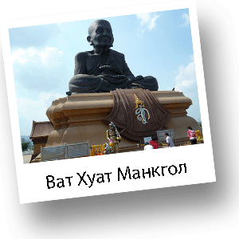

Обзорная экскурсия Хуа Хин и Ват Хуат Монкгол

Хуа Хин – старейший морской курорт в Таиланде. Во время обзорной экскурсии Вашему вниманию будут представлены, как современные места в городе, так и удивительные исторические объекты, которые на сегодняшний день являются, своего рода, памятниками архитектуры города, а также его визитной карточкой. Вы узнаете массу полезной информации о Королевстве Таиланд, а также о Хуа Хине в частности. Вашему вниманию будет представлена информация, которая поможет Вам почувствовать свое пребывание в городе легким и непринужденным. Отправляясь на обзорную экскурсию по этому удивительному городу, Вы сможете в полной мере насладиться красотой небольшого, но в тоже время, очень уютного города Хуа Хин. Вы сможете воочию увидеть город, который является одновременно Королевской резиденцией.

Хуа Хин можно охарактеризовать, как кусочек Европы на территоррии Юго-Восточной Азии. Он совершенно не похож на другие города и курорты Таиланда. Во время обзорной экскурсии Вы отправитесь в увлекательное путешествие. Во время которого, Вы посетите знаменитый железнодорожный вокзал. Вокзал, на сегодняшний день, является действующим и, одновременно, одним из самых красивых сооружений Хуа Хина. Далее Вы отправитесь в храм Ват Хуат Монгкол. Храм расположен на нескольких гектарах земли. Вы совершите интересную прогулку по парку прилегающему к храму, покормите карпов, которые плавают в реке и сфотграфируетесь среди красивейших растений, котрые можно увидеть только на территории Таиланда. В храме Ват Хуат Монгкол Вы увидите огромную статую черного монаха, построенную в честь самого почитаемого тайцами монаха

Луанг По Туада, которая возвышается на пьедестале в центре храма. Вдоволь насладившись архитектурными достопримечательностями, Вы отправитесь на Плавучий рынок, на котором Вы сможете получить понимание о знаменитых плавучих рынках и почувствовать колорит Таиланда. На рынке Вы прогуляетесь по территории вдоль каналов, увидите шоу тайских танцовщиц, сможете купить уникальные сувениры, ретро-предметы, которые в городе найти невозможно. Также при выходе с плавучего рынка Вас ждет встреча со слонами, которых Вы можете покормить и сделать фотографии удобно расположившись на хоботе этих могущественных животных. Следующей Вашей остановкой будет обзорная площадка, которая расположена на горе Као Такиаб. Гора расположена в южной части города. Именно на Као Такиаб обитает множество обезьян, которых Вы сможете увидеть, сфотграфировать, покормить, а также понаблюдать за повадками этих милых животных. Обязательно посетите буддийский храм Ват Кхао Лад, который по приданию охранял моряков, уходящих в море от кораблекрушения. Заключительной частью программы является посещение шелковой фабрики, где Вы обязательно увидите весь цикл изготавления Тайского шелка с момента сбора гусениц тутового шелкопряда до полученных в итоге готовых изделий.
Рекомендации по одежде:
Удобная одежда и обувь

800 Бат
Выезд - 10:00
900 Бат
Возвращение - 15:00
1100 Бат
*Стоимость указана за человека
**Дети до 3 лет - бесплатно, без предоставления отдельного места в транспорте
***Дети от 3 до 10 лет - 600 Бат
Маршрут:
Као Такиаб, Ж-д вокзал, Ват Хуат Манкгол, Плавучий рынок, Шелковая или Ювелирная фабрика.
В стоимость включено:
Трансфер, информация о посещаемых объектах на русском языке, русскоязычная горячая линия на протяжении экскурсионной программы.
Дополнительные расходы:
Личные расходы, чаевые, все входные билеты, корм для обезьян